Configuring Authentication using GitHub
The authentication system in RHDH is handled by Authentication Providers. RHDH uses the providers to access identity and user information, which can be used to delegate access rights to various plugins and services in RHDH. You can configure RHDH to have multiple authentication providers, with only ONE provider being actively used at any given time for logging in users.
RHDH supports many common authentication providers by default like GitHub, GitLab, Auth0, Okta, and more. Consult the references section for the full list.
| Authentication providers are responsible only for authenticating the identity of the user, and passing on this information to RHDH. Authorization, that is, what actions an authenticated identity can perform in RHDH are handled by a different component of RHDH called Role Based Access Control (RBAC) using Permissions Policies. RBAC is covered in a separate section of this course. |
Consider the scenario where your organization’s developers use GitHub to manage source code. You would ideally like developers to use their GitHub credentials to log in to RHDH, and also import team and user information from GitHub. Very often, developers are added to a GitHub Organization to manage groups of developers. The following exercise configures RHDH to use GitHub for authentication, and imports the GitHub organization member and team details into the RHDH database.
Lab: Configuring Authentication using GitHub
Pre-requisites
-
A GitHub account
-
Administrator rights to a GitHub Organization (Create a new Github Org if it does not exist)
-
OpenShift cluster administrator access
-
Ability to create
GitHub Appson GitHub
Configuring GitHub for RHDH authentication involves two major steps:
-
Create a new GitHub App for your GitHub organization
-
Edit the
app-config-rhdhConfigMap and configure RHDH to use the GitHub App for authentication. To prevent storing credentials in plain text in the ConfigMap, you will embed the credentials for GitHub in a secret, and then refer the secret in theapp-config-rhdhConfigMap.
Create a new GitHub App
-
Navigate to https://github.com/organizations/<YOUR_ORGANIZATION>/settings/apps, and then click
New GitHub App. -
In the
Register new GitHub Apppage, fill out the following details:-
GitHub App name: rhdh-app-<your_RHDP_GUID> (A unique name) -
Homepage URL: https://rhdh-developer-hub-devhub.apps.cluster-<GUID>.dynamic.redhatworkshops.io (Your RHDH Route URL) -
Callback URL: https://rhdh-developer-hub-devhub.apps.cluster-<GUID>.dynamic.redhatworkshops.io/api/auth/github/handler/frame -
Webhook URL: https://rhdh-developer-hub-devhub.apps.cluster-<GUID>.dynamic.redhatworkshops.io -
Webhook secret: 5up3rS3cret (Provide a strong secret) -
Under
Permissions, expandRepository Permissionsand ensure that you provide at leastRead-onlyaccess to the GitHub features you would like to integrate from RHDH. At a minimum, toggle the following permissions:-
Administration
-
Commit statuses
-
Contents
-
Dependabot
-
Deployments
-
Pull Requests
-
Webhooks
-
-
Toggle other permissions as per your needs.
-
Under
Organization permissions, ensure that you toggleRead-onlypermissions forMembersso that RHDH can import team and user information from GitHub. -
Select
Only on this accountfor theWhere can this GitHub App be installed?option.
-
-
Verify your form entries, and when you are satisfied click
Create GitHub App. -
You will be shown your
App IDand a client ID. Make note of these values for the next step. -
Click
Generate a new client secret. Copy the generated secret for the next steps.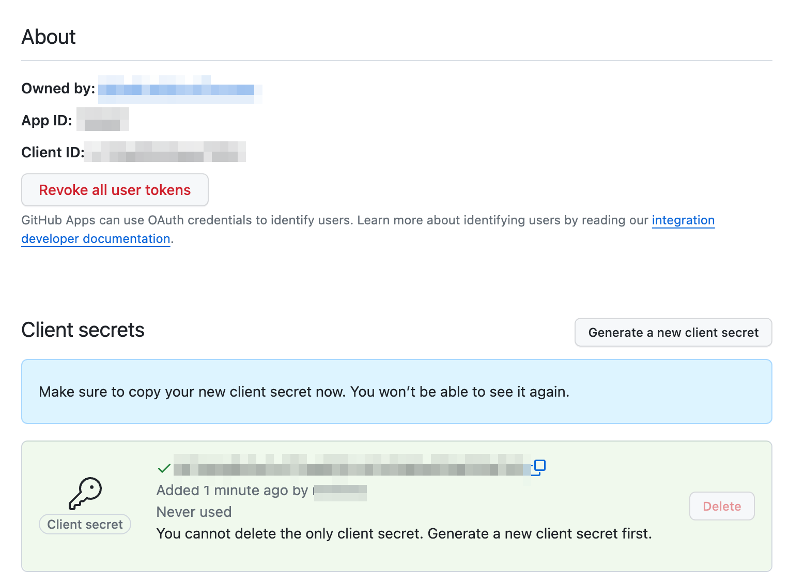Figure 1. Generate Client Secret -
Scroll down to the
Private Keyssection and clickGenerate a private key. Copy the generated private key certificate (it is in PEM format) to a safe location. -
In the left sidebar menu of the generated app, select
Install App, and then clickInstall. -
Select
All RepositoriesforRepository accessand then clickInstall.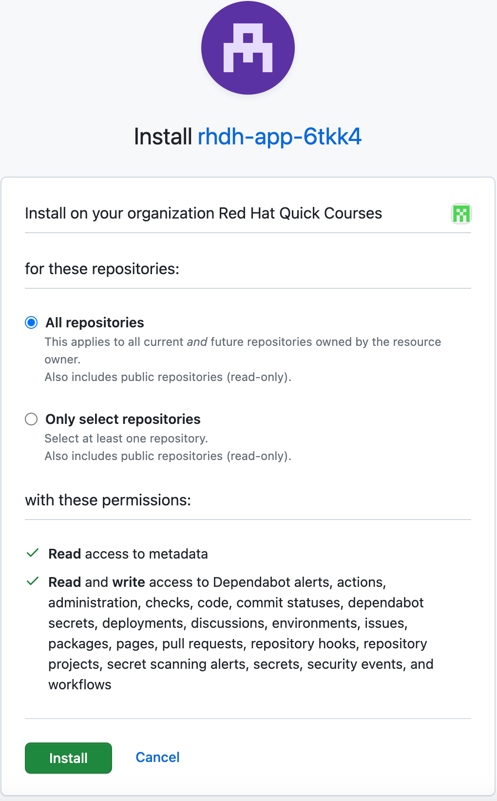Figure 2. Install GitHub App
Create a Secret to Store GitHub App Credentials
Rather than store the GitHub App credentials in plain text directly in the app-config-rhdh ConfigMap, you will create a secret to store the credentials. You will then refer to the credentials as environment variables in the ConfigMap.
-
Create a file named
env.shwith the following environment variables and replace the values with the GitHub App details you created in the previous step.export OPENSHIFT_CLUSTER_INFO=$(oc cluster-info | head -n 1 | sed 's/^.https...api//' | sed 's/.6443.$//') export K8S_CLUSTER_API=$(oc cluster-info | head -n 1 | sed 's/^.*https/https/') export GITHUB_HOST_DOMAIN=github.com export GITHUB_ORGANIZATION='Your Org Name' export GITHUB_ORG_URL=https://$GITHUB_HOST_DOMAIN/$GITHUB_ORGANIZATION export GITHUB_APP_ID='Your App ID' export GITHUB_APP_CLIENT_ID='Your client ID' export GITHUB_APP_CLIENT_SECRET='Your client secret' export GITHUB_APP_PRIVATE_KEY_FILE="$(< rhdh-app-<guid>.2024-01-17.private-key.pem)" export GITHUB_APP_WEBHOOK_URL='https://rhdh-developer-hub-devhub.apps.cluster-<guid>.dynamic.redhatworkshops.io' export GITHUB_APP_WEBHOOK_SECRET='Your webhook secret'
-
Log in to the OpenShift cluster as the
adminuser using theocCLI. -
Switch to the
devhubnamespace where you installed RHDH. -
Source the
env.shfile to export the environment variables:$ source env.sh
-
Create a secret named
rhdh-secretsto store the credentials:$ oc create secret generic rhdh-secrets -n devhub \ --from-literal=GITHUB_ORG_URL=$GITHUB_ORG_URL \ --from-literal=GITHUB_APP_ID=$GITHUB_APP_ID \ --from-literal=GITHUB_APP_CLIENT_ID=$GITHUB_APP_CLIENT_ID \ --from-literal=GITHUB_APP_CLIENT_SECRET=$GITHUB_APP_CLIENT_SECRET \ --from-literal=GITHUB_APP_PRIVATE_KEY_FILE=$GITHUB_APP_PRIVATE_KEY_FILE \ --from-literal=GITHUB_APP_WEBHOOK_URL=$GITHUB_APP_WEBHOOK_URL \ --from-literal=GITHUB_APP_WEBHOOK_SECRET=$GITHUB_APP_WEBHOOK_SECRET
Configure RHDH for GitHub Authentication
-
Log in to the OpenShift web console as the
adminuser and switch to theDeveloper Perspective. -
Click
ConfigMapsand select theapp-config-rhdh. Toggle theYAMLtab to switch to YAML editing mode. -
Add the following YAML configuration at the same indentation level as the
appattribute. Note the reference to environment variables instead of hard code credentials:... data: app-config-rhdh.yaml: | app: title: Red Hat Developer Hub integrations: github: - host: github.com apps: - appId: ${GITHUB_APP_ID} clientId: ${GITHUB_APP_CLIENT_ID} clientSecret: ${GITHUB_APP_CLIENT_SECRET} webhookUrl: ${GITHUB_APP_WEBHOOK_URL} webhookSecret: ${GITHUB_APP_WEBHOOK_SECRET} privateKey: | ${GITHUB_APP_PRIVATE_KEY_FILE} auth: environment: development providers: github: development: clientId: ${GITHUB_APP_CLIENT_ID} clientSecret: ${GITHUB_APP_CLIENT_SECRET} enabled: github: true githubOrg: true
Configure RHDH to Import Users and Groups in a GitHub Organization
-
To enable GitHub Organization member discovery, add the following YAML configuration at the same indentation level as the
enabledattribute:enabled: github: true githubOrg: true catalog: providers: githubOrg: default: id: development orgUrl: ${GITHUB_ORG_URL} -
Click
Save.
Upgrade RHDH Helm Chart
The final step is to inject the secret you created with the GitHub App credentials into the RHDH container. You do this by editing the helm chart configuration and refer to the rhdh-secrets. You will also enable the GitHub Organization discovery dynamic plugin.
-
Edit the
rhdhhelm chart, toggleForm view, and expandRoot Schema > global > Dynamic plugins configuration > List of dynamic plugins that should be installed in the backstage application. Add the value./dynamic-plugins/dist/backstage-plugin-catalog-backend-module-github-org-dynamicto thePackage specification…field. This value enables the dynamic plugin for GitHub Organization discovery.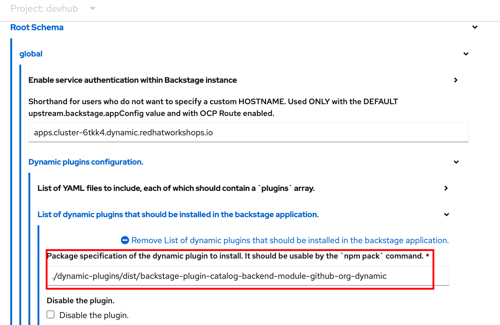Figure 3. Enable the GitHub Org Discovery Dynamic Plugin -
Next, expand
Root Schema > Backstage chart schema > Backstage parameters > Backstage container environment variables from existing Secretsand addrhdh-secretsto refer to the secret you created earlier.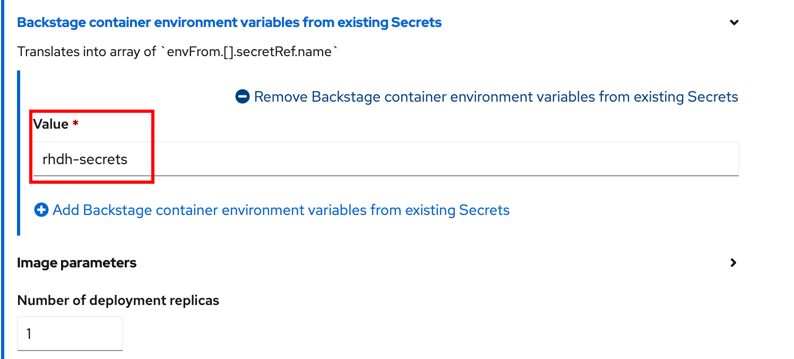Figure 4. Reference the Secret -
Click
Upgrade. -
Wait for a few minutes while the helm chart is upgraded, and the RHDH pod is re-created with the new configuration.
Verify User Sign In
-
If you are signed in as a
GuestRHDH user, then sign out by selecting theSign Out(expand the…next to the Profile card) in theSettings > Profilepage.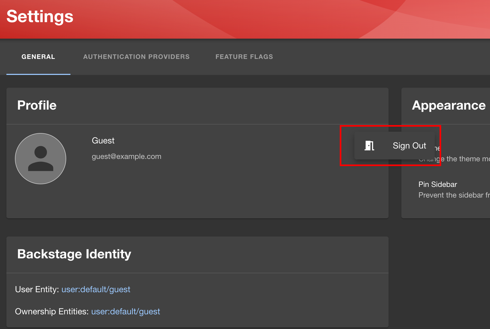Figure 5. Guest Sign out -
Sign in using
GitHubsign-in method in the RHDH home page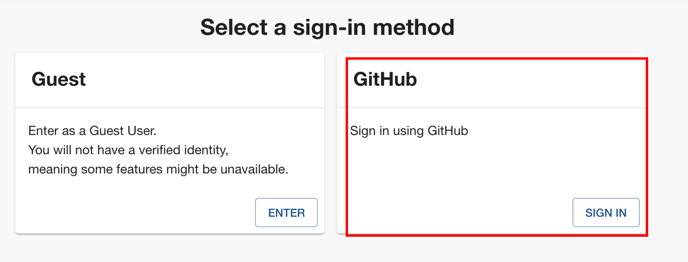Figure 6. GitHub Sign in -
You will be re-directed to a GitHub prompt asking you to sign in using your GitHub credentials. Once you are signed in, you will be asked to allow access to your GitHub profile data.
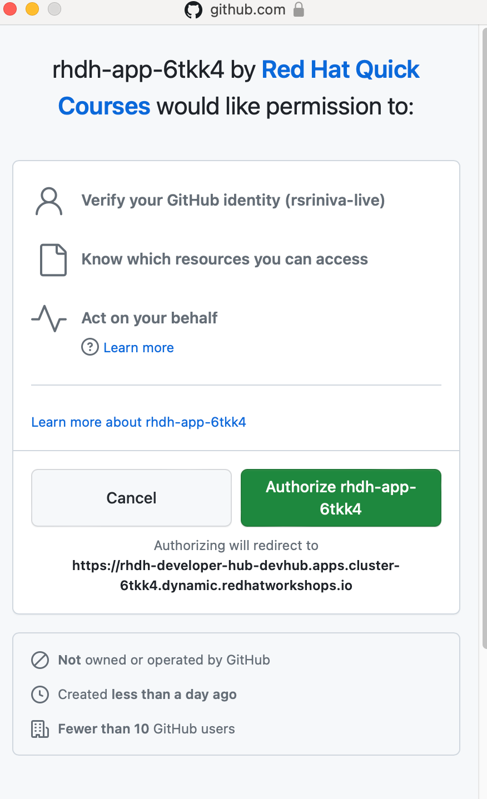Figure 7. GitHub Allow Access Prompt -
After you are signed in, navigate to the
Settingspage. Notice that GitHub has authenticated the user and provided identity information to RHDH.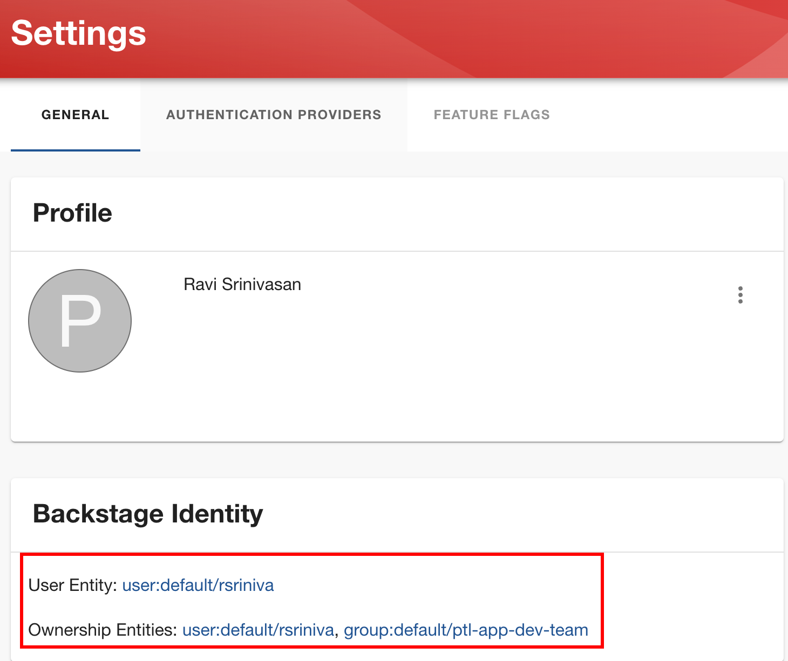Figure 8. GitHub Identity in Settings Page -
Click on the logged in
User Entityin theSettingspage to view the detail imported from GitHub.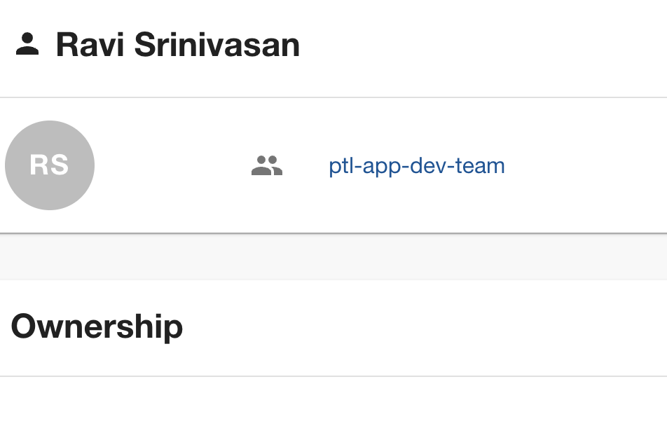Figure 9. View Profile Data -
Click on the RHDH
Catalogin the sidebar. Select theKinddrop-down, and note that two new entities calledUserandGroupare now visible. -
Select
Groupin theKinddrop-down to view the teams (mapped into RHDH Groups) imported from the GitHub organization.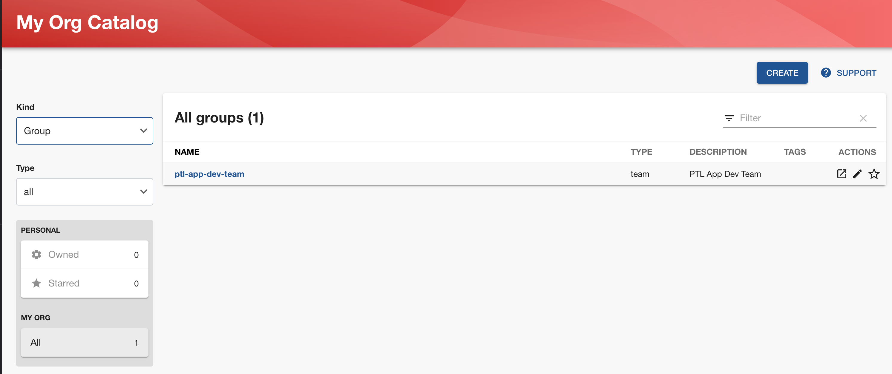Figure 10. View Groups (Teams) from GitHub -
Select
Userin theKinddrop-down to view the users imported from the GitHub organization.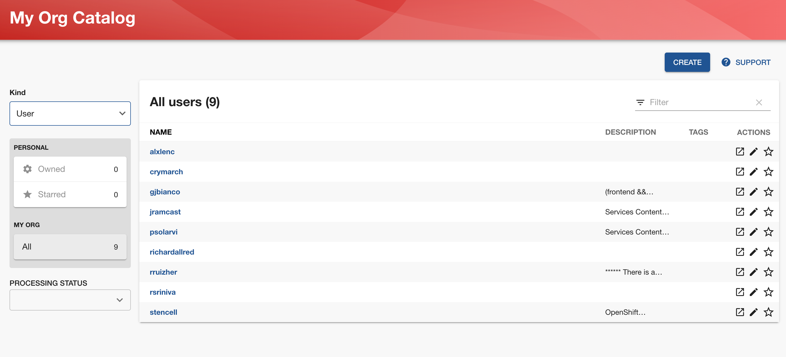Figure 11. View Users Imported from GitHub
| There is a known issue in the RHDH 1.0 version, where it may take more than 30 minutes for the GitHub Organization member discovery plugin to fetch data from GitHub. The schedule is unfortunately fixed and hard-coded in the plugin. This issue will be fixed in a future dot release of the product. |